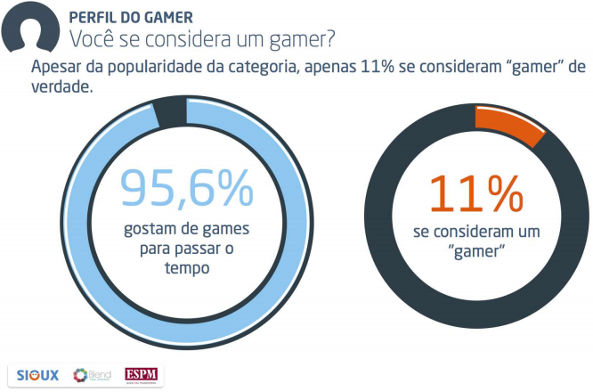
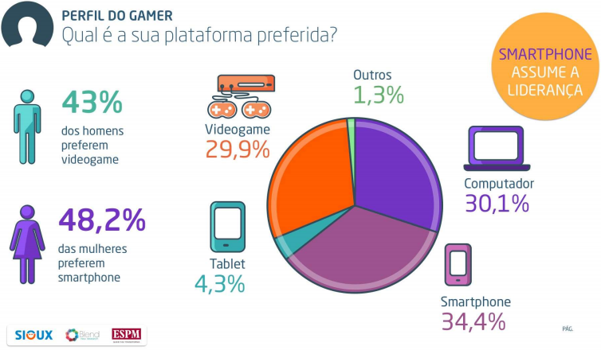

Apenas 11% dos brasileiros se consideram 'gamers'
E você, faz parte desse seleto grupo?
A Pesquisa Game Brasil 2016, divulgada na última quarta-feira (16), analisou diversos dados sobre os jogadores brasileiros, relatando hábitos, preferências e perfis de consumo. O estudo, realizado em parceria com a produtora de conteúdo Sioux, a faculdade ESPM e a agência Blend, trouxe luz a fatos interessantes, como o de que as mulheres atualmente formam 52,6% do público de games no Brasil. Além disso, a pesquisa aponta curiosidades, como por exemplo, a porcentagem de apenas 11% dos entrevistados que se consideram "gamers" de verdade. O IGN Brasil conversou com Guilherme Camargo, cofundador da Sioux e responsável direto pela pesquisa, para entender mais sobre o conceito "gamer" e encontrar respostas relacionadas aos dados oferecidos pelo estudo.
Quase a totalidade dos entrevistados admitiu que joga games. (Reprodução: Pesquisa Game Brasil 2016)
Camargo faz uma correlação com o esporte mais tradicional do país para explicar por que os jogadores casuais formam a grande maioria do público brasileiro. "Fazemos uma comparação com futebol, por exemplo: a diferenciação de quem torce para o Corinthians e quem faz parte da [torcida organizada] Gaviões da Fiel", diz. "É a questão da quantidade de horas dedicada aos jogos, plataforma utilizada e até mesmo o círculo de amizades." O pesquisador explica que essa porcentagem relativamente baixa de "gamers" é um fenômeno comum. "Essa ansiedade ou necessidade de jogar demonstra um nicho extremamente interessante dos jogadores, [o qual] sempre foi um percentual muito pequeno", Camargo diz, apontando que a pesquisa de 2015 indicou um valor semelhante, em que apenas 9% se declararam "gamers".
De acordo com a pesquisa, o smartphone é a plataforma preferida do jogador brasileiro.
Para Camargo, esse público mais "intenso" possui predileções diferenciadas. "O [jogador] hardcore tem como plataforma preferida os consoles mesmo, cuja experiência demanda mais tempo de dedicação. As fases demoram mais e você não fica jogando por 10 minutos e sai satisfeito. A imersão e o tempo utilizado são maiores", explica. "No computador, você percebe esse perfil também, com um League of Legends ou Dota 2 -- ainda que existam muitos jogos casuais para PC." Porém, o pesquisador teoriza que um mesmo perfil de jogador hardcore pode consumir diversos tipos de games: "O fato de o jogo ser casual não quer dizer que ele não entre no meio dessa parcela comercial gamer. Há pessoas que jogam muito online, e como possuem filhos, [também] jogam os games casuais com a família", define Camargo. "A gama de jogos que possuímos nas diversas plataformas nos permite momentos com os consoles e TV, que proporcionam maior imersão, mas não impede que os games casuais estejam em nosso dia-a-dia enquanto pegamos transporte público ou ficamos na espera do dentista."
Reportagem do site IGN Brasil jornalista Pablo Miyazawa..